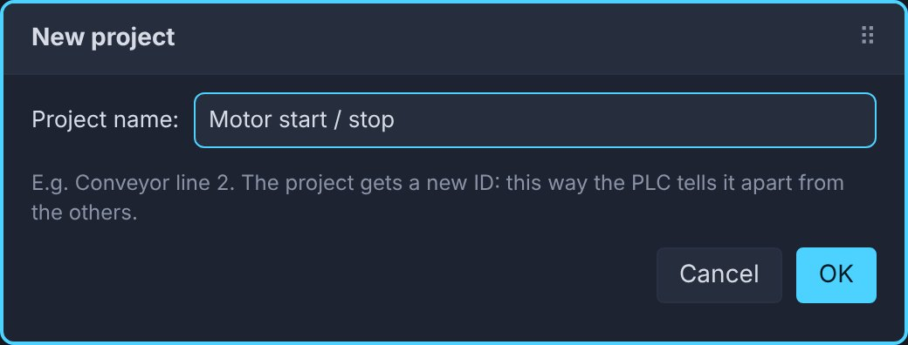
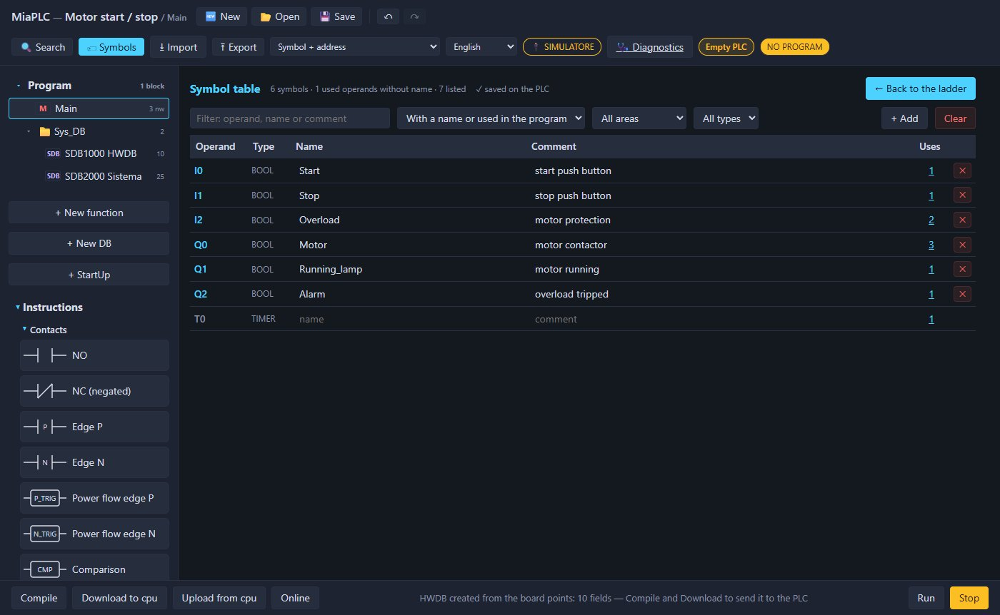
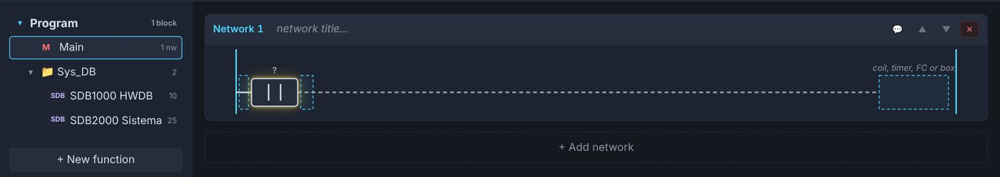
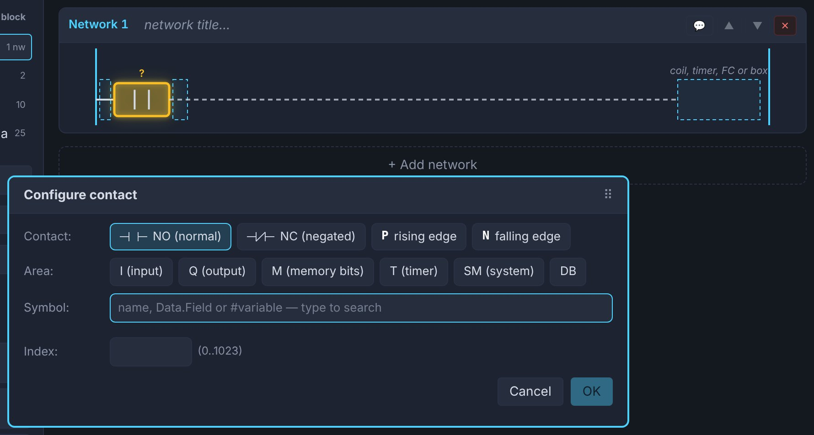
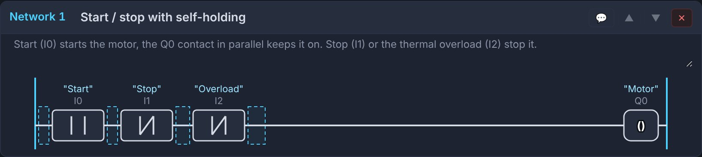
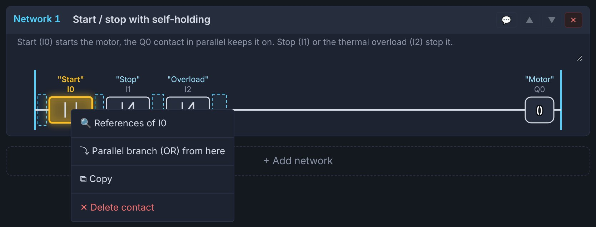
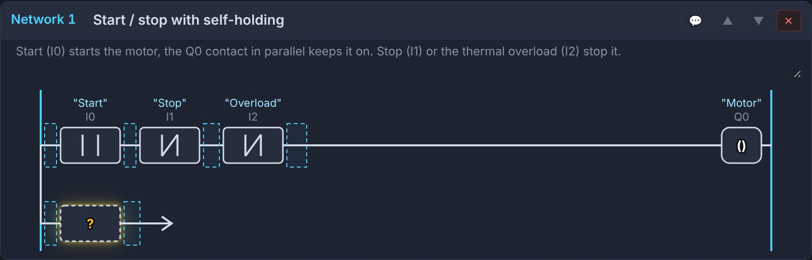
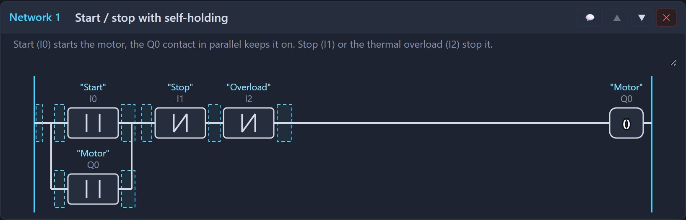
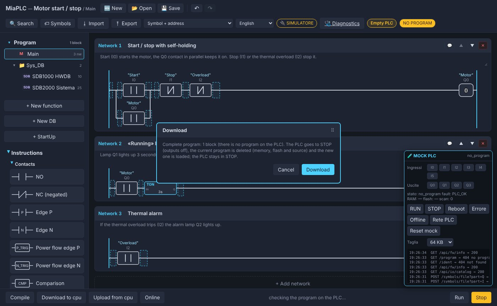
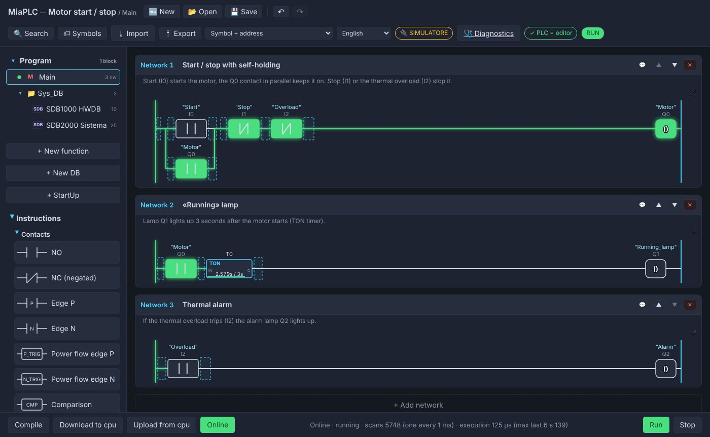

Before you start
We build the first program of every automation course: start / stop of a motor with self-holding. Start runs the motor, the motor's own contact keeps it running, Stop or the overload relay stops it. A lamp lights up 3 seconds after the start and a second lamp shows a tripped overload.
| Address | Symbol | What it is |
|---|---|---|
I0 | Start | start push button (normally open) |
I1 | Stop | stop push button |
I2 | Overload | motor protection |
Q0 | Motor | motor contactor |
Q1 | Running_lamp | motor running |
Q2 | Alarm | overload tripped |
All you need is the browser: open the simulator in another tab and keep this page next to it. To see the result straight away: finished example in the simulator.
In this example Stop and Overload are normally open contacts: at rest the input is 0, pressed it is 1. That is why the ladder uses them with an NC contact, which lets the power flow through when the input is 0. In real plants the stop is wired normally closed (a broken wire stops the machine) and in the ladder it becomes an NO contact: see the hardware manual.
1 · New project
Press 🆕 New, type the project name and press OK. The editor creates the Main block with an empty network and, from the board's points, the HWDB in the Sys_DB folder.

2 · Symbols
A symbol is the name of an address: in the ladder you will see "Start" above I0. Press 🏷 Symbols,
then + Add for each row of the table above: operand, name and comment. ← Back to the ladder to go back to the program.

3 · The first contact
From Instructions → Contacts drag NO onto the dashed area of the network. The contact appears with a ?:
it has no address yet.

Click the contact: in the Configure contact window choose the area I (input) and index 0, or type
Start in the Symbol field. OK.

4 · Stop, overload and motor
- Drag an NC (negated) contact onto the area right after Start and give it
I1(Stop). - Another NC after Stop, with
I2(Overload). - From the Coils section drag a Coil onto the right-hand area, «coil, timer, FC or box», and give it
Q0(Motor).

Now the motor only runs while you hold Start. It needs self-holding.
5 · Self-holding (parallel branch)
The motor contact, in parallel with Start, keeps the motor running when you release the button.
- Right click on the Start contact → ⤵ Parallel branch (OR) from here.

- An open branch appears below Start, with a
?placeholder and an arrow. - Drag an NO contact onto the
?and give itQ0(Motor). With the keyboard: select the?and press A. - Drag the arrow onto the line, right after Start: the branch closes there. Or: right click on the arrow.


6 · Running lamp and alarm
Press + Add network below network 1.
| Network | What to drag | Addresses |
|---|---|---|
| 2 · «Running» lamp | NO contact, then a TON from the Timer section, then a coil | contact Q0; timer T0 with time 3s; coil Q1 |
| 3 · Overload alarm | NO contact and coil | contact I2; coil Q2 |
The TON (on-delay) closes its output once power has reached it for at least the set time: the lamp lights up 3 seconds after the motor starts. The other instructions, with pictures, are in the wiki.
7 · Download and RUN
Press Download to cpu: the editor compiles by itself and shows what it sends. Confirm with Download, then answer
RUN to the next question. If there is an error (a ? left, an open branch) the bottom line says which network to fix.

8 · Online and test
Press Online: closed contacts and energised coils turn green, the timer shows the time going by.
In the MOCK PLC box at the bottom right click I0 (Start) to press it and again to release it:
Q0stays on thanks to the self-holding;- after 3 s
Q1lights up; - click
I1(Stop) orI2(overload): the motor stops; withI2Q2lights up too.

If you change the program while Online, the changed block leaves Online (≠ PLC appears at the top) until the next Download.
9 · Save
💾 Save downloads the project as a .miaplc file: program, symbols and DBs. Open it again with 📂 Open, in the
simulator or in the board's editor. The editor also keeps a draft in the browser: if you close the page by mistake, it is there when you reopen it.
Traffic light
Three timers in a chain run the cycle green 5 s, yellow 2 s, red 4 s; with the traffic light off the yellow flashes. Open the finished example.
Symbols: I0 Enable, Q0 Green, Q1 Yellow, Q2 Red. Then six networks:
| Network | Content | Why |
|---|---|---|
| 1 · Green time | NO I0 → NC T2 → TON T0 5s | at the end of the red, T2 restarts the whole cycle |
| 2 · Yellow time | NO T0 → TON T1 2s | starts when green is over |
| 3 · Red time | NO T1 → TON T2 4s | starts when yellow is over |
| 4 · Green light | NO I0 → NC T0 → coil Q0 | green until T0 is done |
| 5 · Yellow light | branch 1: NO I0, NO T0, NC T1; branch 2: NC I0, NO SM5 → coil Q1 |
steady in its phase, flashing at 1 Hz with the traffic light off |
| 6 · Red light | NO I0 → NO T1 → coil Q2 | red from the end of yellow to the end of red |
A timer goes into the network like a contact: drag it from the Timer section and click the box to choose its number (T0, T1, T2) and time.
The contact T0 is the output of timer 0. SM5 is a system bit that flashes at 1 Hz by itself.

The relay song
An advanced example: a step sequencer that beats a rhythm on Q0 and Q1. Rather than rebuilding it from scratch,
open it and study it network by network:
every network has its comment (in Italian).
- Main only calls the function FC10 «Canzoncina»: the real program is there. Click FC10 in the block tree to open it.
- StartUp resets the step after a Download or a RUN, with MOVE boxes.
- DB1 «Merker» holds the working words: step, bar, score.
- In FC10, self-rearming timers give the time of each part (75, 70 and 95 ms per step); a pulse at every step advances the counter with ADD.
- DIV and MOD compute bar and position; the «score» is a 16-bit word per bar, one bit per step; compares pick the part from the step number.
- The last two coils switch the relays on for 45 ms at every beat.
M30 = 1mutes,I0starts from the top.
To create an FC: + New function; to call it, drag it from the block tree into a network of Main. For a DB: + New DB and add the fields.
What next?
The same projects run on the real board. The hardware manual explains how to prepare an ESP32 with MiaConfig, wire buttons and LEDs and load the example.